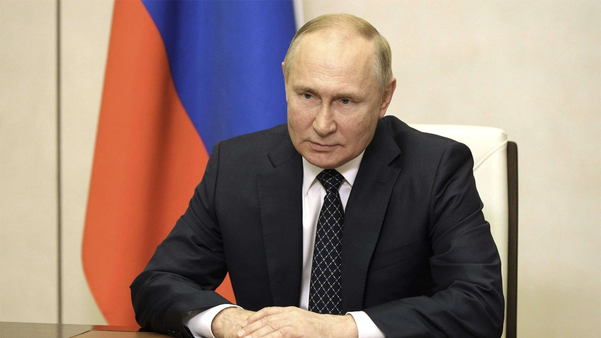

NEWS 
Weltweit Entsetzten nach Anriff auf Rushdie
Der Messerangriff auf den Schriftsteller Salman Rushdie hat Weltweit Entsetzten ausgelöst: Die US-Regierung
und UNO-
Generalsekretär Antonio Guterres zeigten sich bestürzt. Die USA und die Welt seine Zeugen eines
"verwerflichen
Angriffs" geworden, erklärte Nationale Sicherheitsberater von US-Präsident Joe Biden, Jake Sullivan, am
späten
Freitagabend (Ortszeit). "Diese Gewalttat ist entsetzlich."
Angriff auf Rushdie
Inland
Neuer Obmann für Schulerunion
Die ÖVP-nahe Schülerunion hat einen neuen Bundesobmann. Der 21-jährige Wiener Manuel Kräuter wurde beim 50.
ordentlichen Bundestag der Organisation mit 98,26 Prozent zum neuen Bundesobmann gewählt, teilte die
Schülerorganisation heute in einer Aussendung mit. An seiner Seite steht die Vorarlbergerin Laura Bayer, die
zur
Bundesgeschäftsführerin bestellt wurde
Popper: Politik muss Teststrategie festlegen
Die Entwicklung der CoV-Infektionen ist derzeit nicht prognostizierbar. Dafür sind die Testzahlen zu
niedrig. Um für den weiteren Verlauf der Pandemie vorbereitet zu sein, muss die Politik sich jetzt auf eine
Teststrategie festlegen, fordert Simulationsforscher Niki Popper
Ausland
Polen plant Einschränkungen bei VISA für Russen
Auch Polen erwägt, die Regeln für die Visavergabe für russische Staatsbürger einzuschränken. „Polen arbeitet
an der Entwicklung eines Konzepts, das es ermöglicht, keine Visa für Russen zu erteilen", sagte
Vizeaußenminister Piotr Wawrzyk am Sonntag der Nachrichtenagentur PAP. Die Entscheidung darüber werde in den
kommenden Wochen fallen.

"Es gibt keine russichen Soldaten auf ukrainischen Boden"
- Vladimir Putin
welt.de
ORF-Zentrum
Würzburggasse 30
1136 Wien